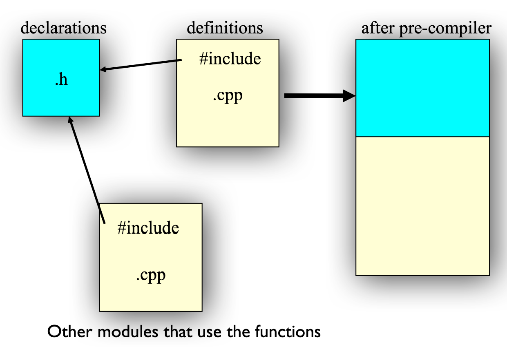

Classes⚓︎
约 854 个字 54 行代码 预计阅读时间 5 分钟
用 C 语言的方式声明原型 (prototypes)：
typedef struct point {
float x;
float y;
} Point;
void print(Point* p);
void move(Point* p, int dx, int dy);
可以看到，上面的两个函数接收的第一个参数都是 Point 结构体。在 C++ 中，这样的函数声明可以直接放进结构体，形成了类 (class)：
而这些函数的实现 (implementations) 如下所示：
void Point::init(int ix, int iy) {
x = ix; y = iy;
}
void Point::move(int dx,int dy) {
x += dx; y += dy;
}
void Point::print() {
cout << x << ' ' << y << endl;
}
??? note ::解析器 (resolver)
语法为：
- \<class name\>::\<function name\>
- ::\<function name\>
```cpp
void S::f() {
::f(); // Would be recursive otherwise!
::a++; // Select the global a
a--; // The a at class scope
}
```
调用类里面的函数
- 调用函数的变量与被调用的函数之间有一定关系，而且函数知道它正在为变量干活
-
这是通过
this这个隐藏于所有成员函数的参数实现的void Point::move(int dx, int dy);会被识别为void Point::move(Point *this, int dx, int dy);this参数是一个位于所有结构体成员函数内的自然局部变量，它不能被定义，但可以直接使用- 在成员函数内，可以使用
this作为指向调用函数的变量的指针
-
在成员函数内调用其他成员函数时，无需指明变量
对象 = 数据（特性 / 状态）+ 运算（函数）= 属性 + 服务
Declaration and Definition⚓︎
- 类的声明，以及成员函数的原型应该要放在头文件（.h）内
- 成员函数的定义则要放在另一个源文件（.cpp）内
编译单元（.cpp
- 编译器只看一个 .cpp 文件，并生成 .obj 文件
- 链接器链接所有的 .obj 文件为一个可执行文件
- 使用 .h 文件提供其他 .cpp 文件的函数信息
头文件（.h
- 如果函数 / 类在头文件中声明，那么需要将头文件包括在所有使用和定义该函数 / 类的地方
- 头文件 = 接口 (interface)
- 头文件是开发者和用户之间的合同 (contract)
- 编译器通过要求在使用前声明所有的结构和函数来强制执行合同

-
此外，外部变量 (extern variable) 也得在头文件中声明
-
回顾
#include：- 它将被包含的文件插入到 .cpp 文件内这条语句的位置上
#include "xx.h"：先搜索当前目录，然后寻找其他目录#include <xx.h>：在指定路径上搜索#include <xx>：与#include <xx.h>相同
-
标准的头文件结构
Initialization and Clean-Up⚓︎
每个类都有一个初始化函数 init
-
构造函数 (constructor)
- 如果类里面有一个构造函数，那么编译器在创建该类的对象时，在程序员能够操纵对象前，会自动调用构造函数
- 构造函数的名称与类名相同
-
带参数的构造函数：这允许我们指定对象是如何创建的，给予一些初始值
-
初始化列表 (initializer list)
-
成员变量能够在类里面直接初始化
-
或通过构造函数的初始化列表实现
-
-
默认的构造函数调用时无需指明参数
- 如果在类里面没有声明构造函数，那么编译器会自动为该类创建一个构造函数
- 存储分配和初始化
- 编译器在作用域的起始部分（
{） ，为作用域分配存储空间
- 编译器在作用域的起始部分（
-
析构函数 (destructor)
- 在 C++ 中，清除 (cleanup) 操作与初始化同等重要，它是通过析构函数实现的
-
析构函数的名称为在前面带波浪号（~）的类名，无需任何参数
-
当对象离开作用域时（到达包裹对象的
}时） ，析构函数由编译器自动调用
评论区
如果大家有什么问题或想法，欢迎在下方留言~